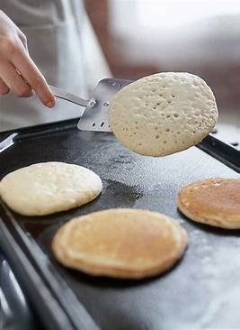

PANCAKE RECIPE
what is a pancake ?
A pancake is a flat cake, often thin and round, prepared from a starch-based batter that may contain eggs, milk and butter, and then cooked on a hot surface such as a griddle or frying pan.

Delicious pancakes topped with syrup and fresh berries.
According to Wikipedia, in Kenya, pancakes are eaten for breakfast as an alternative to bread. They are served plain with the sugar already added to the batter to sweeten them. Kenyan pancakes are
similar to English pancakes and French crepes.
how to prepare pancakes
ingridients
- Flour: All-purpose flour is commonly used, but you can also use whole wheat flour or other types of flour for variation.
- Baking Powder: This is a leavening agent that helps the pancakes rise and become fluffy..
- Salt: Just a pinch to enhance the flavor
- sugar:For sweetness. You can adjust the amount according to your preference.
- egg: Acts as a binder and adds richness to the batter.
- milk: Provides moisture and helps create the right consistency for the batter. You can use regular milk, buttermilk, or even alternative milk options like almond milk or oat milk.
- butter or milkAdds richness and helps prevent sticking to the cooking surface
other ingridients
- Vanilla extract: Adds a subtle flavor
- Cinnamon: Provides warmth and spice.
- Fruit: Fresh berries, sliced bananas, or apples can be added to the batter for extra flavor and texture.
- chocolate Chips: For a sweet treat, add chocolate chips to the batter.
instructions
- In a large mixing bowl, combine 1 cup of all-purpose flour (or whole wheat flour for variation), 2 teaspoons of baking powder, a pinch of salt, and 2 tablespoons of sugar. Mix well.
- In a separate bowl, beat 1 egg.
- Stir in 1 cup of milk (you can use regular milk, buttermilk, or alternative milk options like almond milk or oat milk) and 2 tablespoons of melted butter or oil into the beaten egg.
- Pour the wet ingredients into the dry ingredients and stir until just combined. It's okay if the batter is slightly lumpy.
- Preheat a non-stick skillet or griddle over medium heat. Lightly grease with butter or oil.
- Pour about 1/4 cup of batter onto the skillet for each pancake. Cook until bubbles form on the surface and the edges look set, about 2 minutes.
- Flip the pancake and cook until golden brown on the other side, about 1-2 minutes more.
- Repeat with the remaining batter, greasing the skillet as needed.
- Serve the pancakes warm with your favorite toppings, such as maple syrup, fruit, or whipped cream.Enjoy!
when to flip pancakes
Your pancake will tell you when it's ready to flip. Wait until bubbles start to form on the top and the edges look dry and set. This will usually take about two to three minutes on each side.

join my newsletter
I will be delivering one recipe weekly to your inbox. Making you eat the best meals one mail at a time. Just tell me your email address below alongside your first and last name and we will be more than ready to roll.